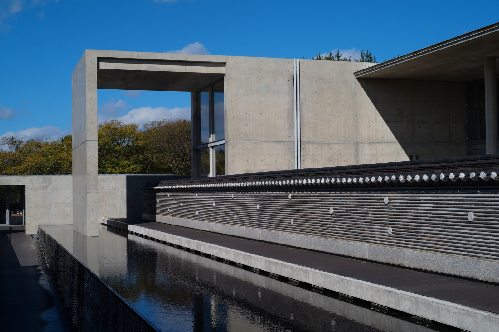
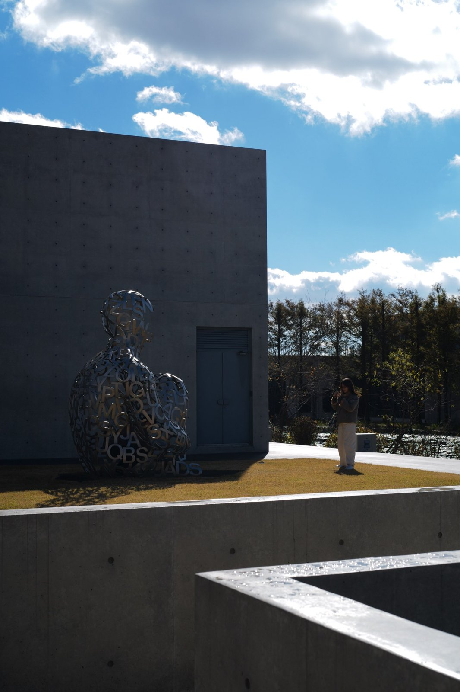
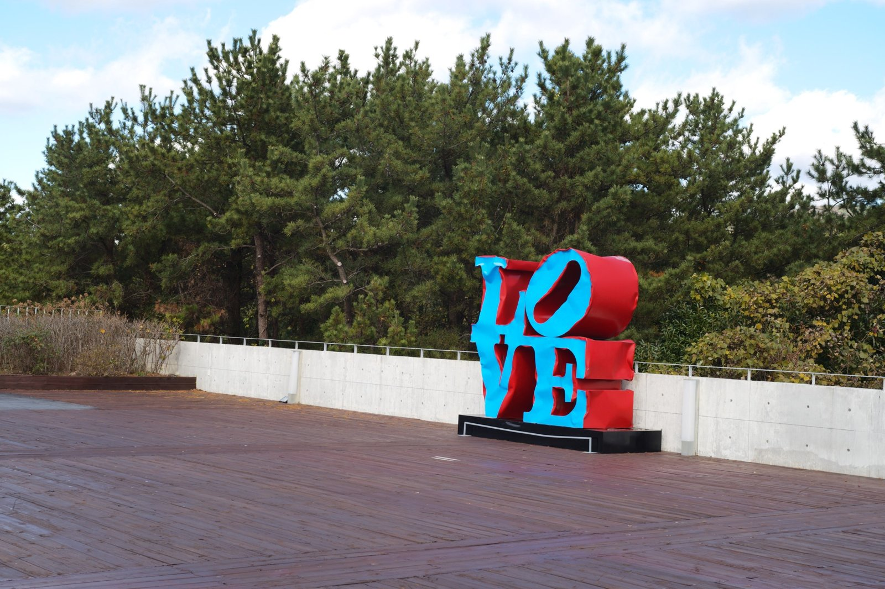

2026.11.22
点は積もり、合意はあとに続く
ボンテ博物館で出会った草間彌生のかぼちゃと無限の鏡の間。合意は価値を確定させるけれど、発明することはできません。
この記事は韓国語の原文を自動翻訳したものです。
ボンテ、過去と現在をつなぐこと
西帰浦の安徳面の山裾にあるボンテ博物館の第一印象は、つながりでした。安藤忠雄は打ち放しコンクリートで建物を建てましたが、その中に収められているのは朝鮮時代の工芸品です。最も現代的な素材で最も古いものを抱かなければならなかったのですから、その軸を定めるまでには悩みも多かったことでしょう。


その悩みへの答えは、第1館へ入る道にありました。コンクリートの壁に沿って瓦をのせた塀が続き、その塀に沿って歩く数歩のあいだ、時間が逆に流れます。入場する過程そのものが、過去へ入っていく時間旅行でした。


そして第3館に草間彌生がいます。2014年からここを守ってきた「かぼちゃ」(2013)と「無限の鏡の間 魂の輝き」(2008)の2点です。古いものと新しいものが出会うこの建物で、彼女はもうひとつ別の種類の時間を見せてくれます。

彼女は今年の8月、97歳で世を去りました。だから今回は、少し違う問いを抱いてその前に立ちました。この作品たちの価値はどこから来るのでしょう。人々がそうだと合意したからでしょうか。
かぼちゃ、仕事の蓄積
黄色い体の上に、黒い点がびっしりと連なっています。点は曲面に沿って大きくなったり小さくなったりし、硬い彫刻に息のような量感を生みます。よく見るほど、その点がひとつひとつ違うことに気づきます。

かぼちゃは彼女にとって幼年の記憶でした。松本の種苗農場で育ちながら初めて描いたかぼちゃは、ニューヨークを経て東京に戻ってからも、絶え間なく現れ続けました。ボンテのかぼちゃは、その長い線の一点にすぎません。
だからこのかぼちゃの前で私が見ているのは、ひとつの彫刻ではなく蓄積です。幾重にも積まれた点、数十年のあいだ同じモチーフに戻ってきたひとりの人の時間。反復はここでは、強迫である前に誠実さです。
ある作品が後に再発見されるということは、発見される何かがすでにそこにあったということです。蓄積は、誰も見ていないときにも育ちます。
インフィニティ・ミラールーム、感覚の衝撃
私はこの部屋についてほとんど何も知らずに入りました。扉が閉まると、まず闇が来て、やがて無数の点の光が四方に果てしなく広がります。壁がどこで終わるのか分かりません。
最初に浮かんだ感覚は、母の胎内のようだ、というものでした。暗くて居心地がよく、境界のない場所。無限に広がる点の饗宴にしばらく頭がしびれ、そのあいだに、知らぬまま無我の瞑想の中へ落ちていきました。
草間が生涯語り続けてきた「自己消滅」は、ここでは概念ではなく身体の感覚になります。彼女が見ていた世界は、こんな姿だったのではないでしょうか。短い時間でしたが、彼女の立つ場所から世界を想像してみることができました。
この部屋は、説明よりも先に届きます。作家も美術史の文脈も知らなかった私にそうだったように、初めて足を踏み入れる誰にでも同じ体験を差し出します。感覚の衝撃は、合意を必要としない言語です。
扉を出ると、また安藤の灰色の壁です。満ちることと空けることが、扉一枚を隔てて向き合っています。

合意は確定させるが、発明はできない
1960年代のニューヨークで、草間は周縁にいました。1973年に日本へ戻り、1977年からは自ら病院に身を置いて、道の向かいのアトリエに通いました。世界が彼女を再び呼んだのは、1990年代に入ってからでした。
そのあいだ、作品は変わりませんでした。変わったのは、作品を見る人々の合意でした。美術館と批評家、コレクターが声をそろえて彼女の名を呼びはじめ、価格はその声に従って上がりました。
では、価値は合意なのでしょうか。ボンテの二つの作品の前で、私は半分だけそうだと答えます。合意が虚空から生まれたのなら、いつか同じ虚空へ散っていたはずです。
合意が戻ってくる場所には、二つのものが先にありました。数十年にわたって積み重ねられた仕事の蓄積と、初めて見る人にも届く感覚の衝撃。かぼちゃは前者を、ミラールームは後者を見せてくれます。
合意は価値を確定させるけれど、発明することはできません。点はひとりで積もり、合意は遅れて到着します。草間彌生の生涯は、その順序をもっとも鮮やかに示した例です。


